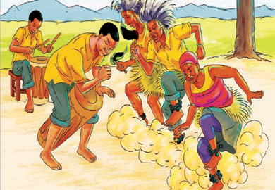
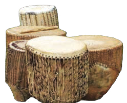

Kielezo namba 4. Mitindo ya kucheza ngoma za asili za Kitanzania
Jamii za Kitanzania zilitumia ala kama vile ngoma, filimbi na marimba katika kucheza ngoma hizi za asili (chunguza Kielelezo namba 5).

Ngoma
Marimba ya mbao na vigongeo
Filimbi
Manyanga
Kielelezo namba 5: Baadhi ya ala za ngoma za asili za Kitanzania